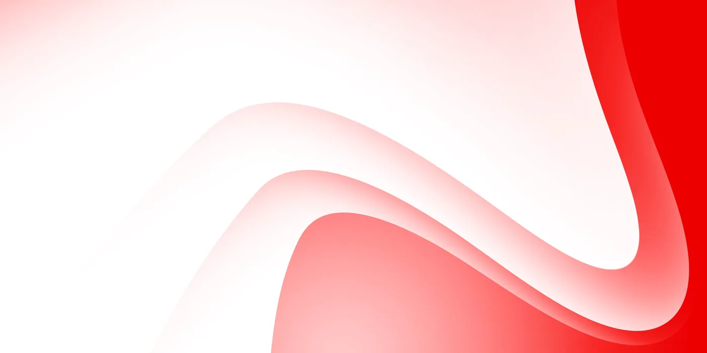
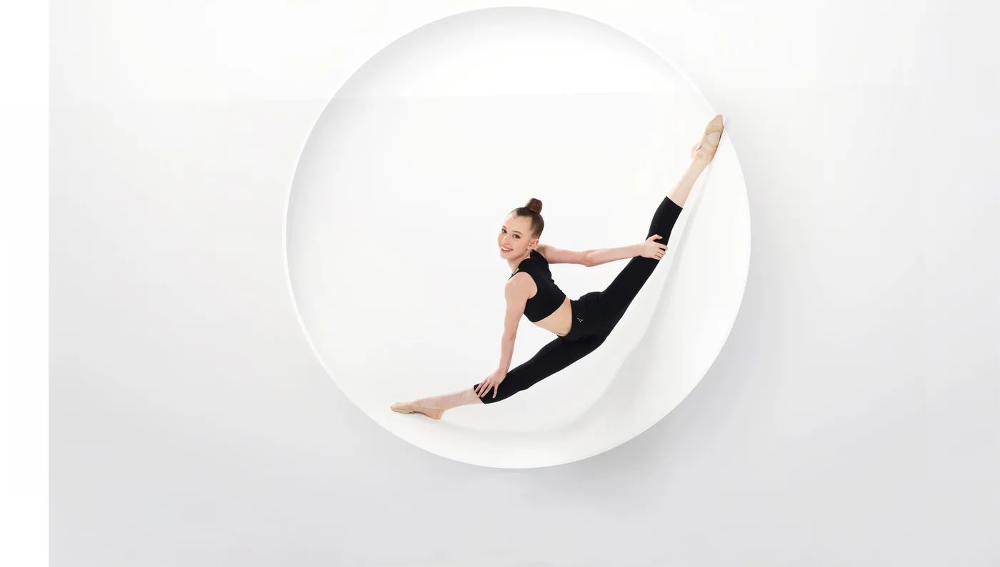
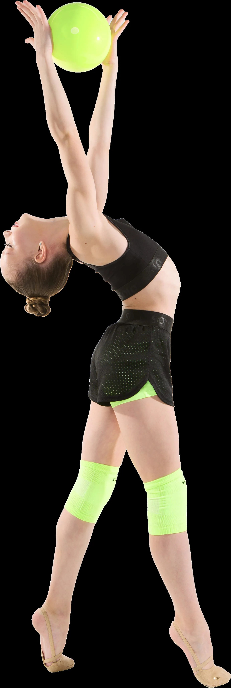
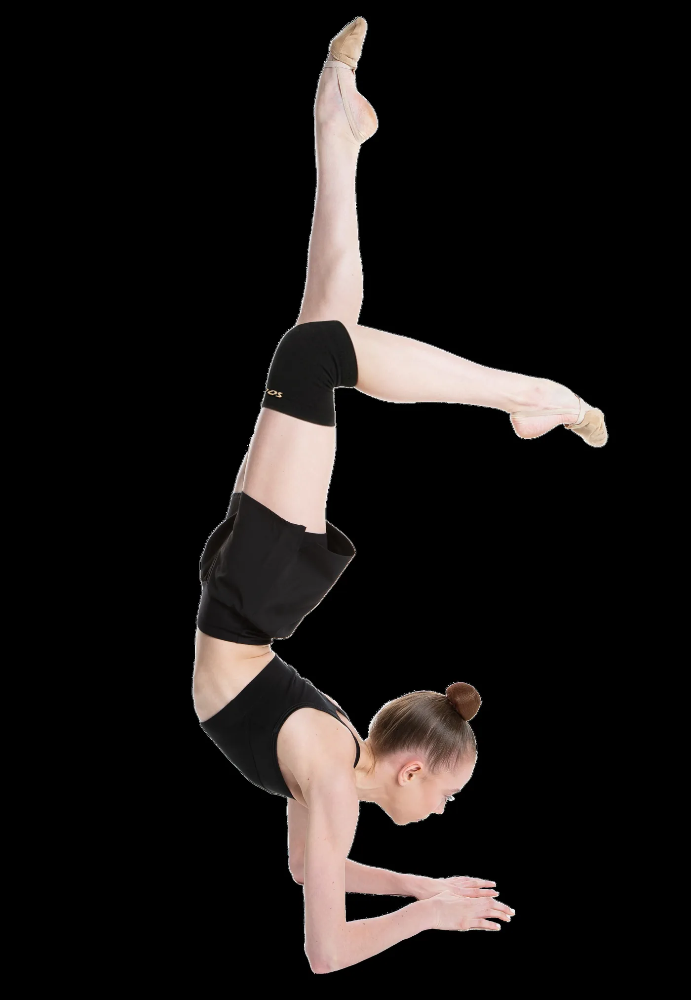
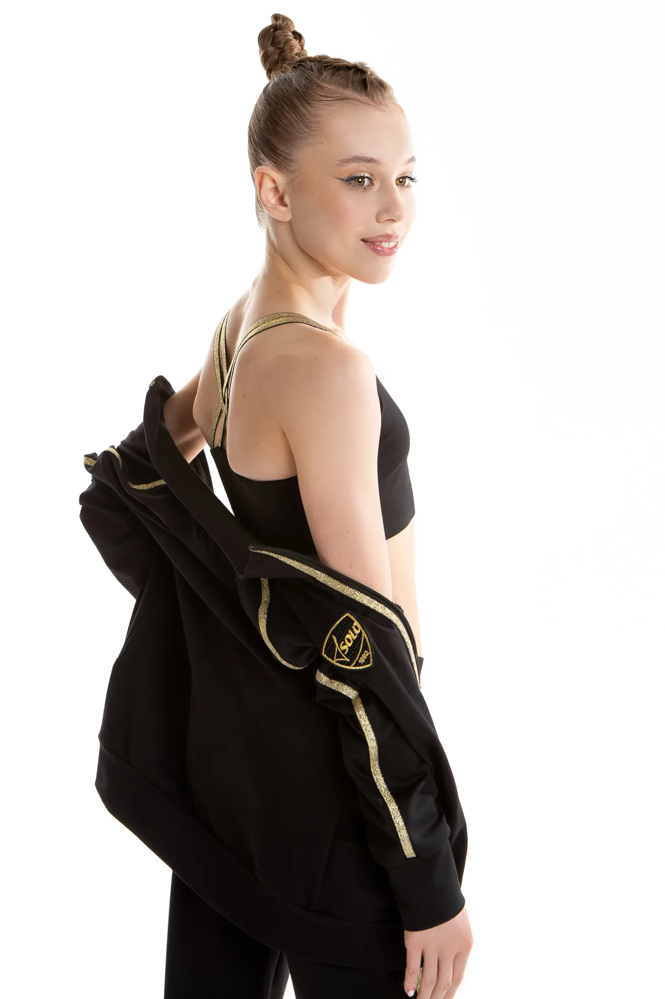

Сотрудничество с SOLO
Мы верим, что сильное сотрудничество начинается не с контрактов, а с взаимного интереса, доверия и общих ценностей.
В SOLO 3 уровня взаимодействия со спортсменками:

Уровни взаимодействия
Каждый уровень открывает новые возможности и позволяет развивать сотрудничество в комфортном для обеих сторон формате.
При этом каждый уровень является самостоятельным и может быть долгосрочным.
Контент
Мы ценим живой и естественный контент с личными эмоциями и реальным спортивным опытом.

Уровень 1. Бартер
На этом этапе мы знакомимся со спортсменкой, её подачей и отношением к бренду.
- разовую отправку продукции SOLO;
- возможность попасть в социальные сети бренда;
- возможность начать путь внутри программы сотрудничества.
- 1 рилс с продукцией SOLO;
- 1 пост;
- 3–5 сторис;
- отметка бренда во всех публикациях, связанных с сотрудничеством.

Уровень 2. Друг бренда SOLO
Статус для гимнасток, с которыми у бренда уже сложились хорошие отношения, комфортная коммуникация и взаимное доверие. На этом этапе гимнастка становится частью сообщества SOLO.
- периодические отправки продукции;
- отдельные позиции экипировки;
- новинки бренда;
- более активное размещение в социальных сетях SOLO;
- участие в закрытом сообществе бренда;
- ранний доступ к новинкам и коллекциям;
- возможность влиять на развитие бренда;
- идеи и поддержку по созданию контента.
- регулярное присутствие SOLO в аккаунте спортсменки;
- естественная интеграция бренда в спортивную жизнь;
- поддержание контакта с командой бренда.
Уровень 3. Амбассадор SOLO
Высший уровень сотрудничества внутри программы. Амбассадоры SOLO становятся частью публичного образа бренда и представляют его внутри спортивного сообщества.
- комплекты из коллекций SOLO;
- регулярное обновление экипировки;
- поддержка под турниры и сборы;
- приоритетный доступ к новинкам;
- возможные индивидуальные изделия;
- участие в съёмках и проектах SOLO;
- участие в тестировании продукции;
- приоритетное участие в мероприятиях бренда;
- активное продвижение в социальных сетях SOLO;
- участие в закрытом сообществе бренда.
- регулярное присутствие SOLO в аккаунте спортсменки;
- участие в проектах и активностях бренда;
- участие в развитии и продвижении SOLO;
- лояльность бренду;
- понимание того, что репутация и публичное поведение спортсменки влияют на восприятие бренда.

Сотрудничество
спортсменок
с другими брендами

На уровнях «Бартер»
и «Друг бренда SOLO»
мы не требуем эксклюзивности,
однако просим учитывать интересы бренда и по возможности избегать одновременного активного продвижения прямых конкурентов SOLO.
Для амбассадоров SOLO вопрос сотрудничества с брендами, являющимися прямыми конкурентами, обсуждается индивидуально с командой бренда.
Мы всегда стараемся находить решения, комфортные для обеих сторон.
Как попасть в программу?
Мы ищем тех, кто искренне разделяет философию SOLO и хочет стать частью нашего сообщества.
При рассмотрении кандидатур мы оцениваем не только результаты в спорте или размер аудитории. Для нас не менее важны ценности спортсменки, её отношение к тренировкам, стиль общения с подписчиками, качество контента и готовность к долгосрочному взаимодействию.